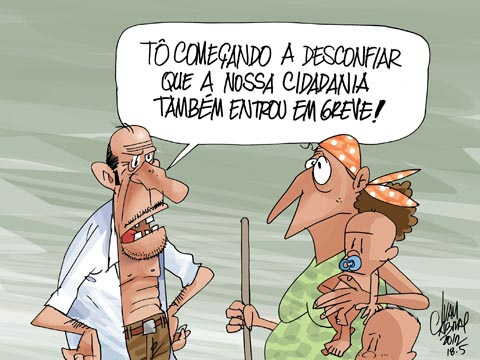
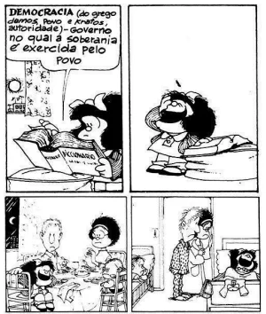
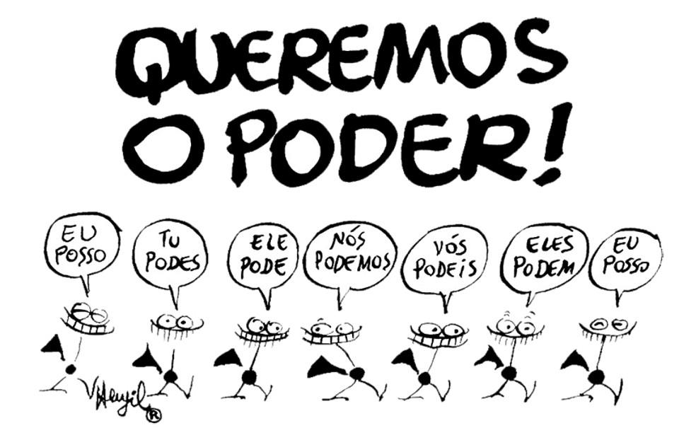
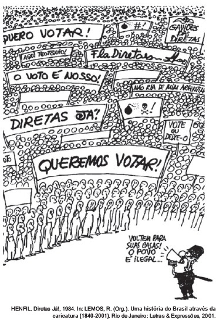
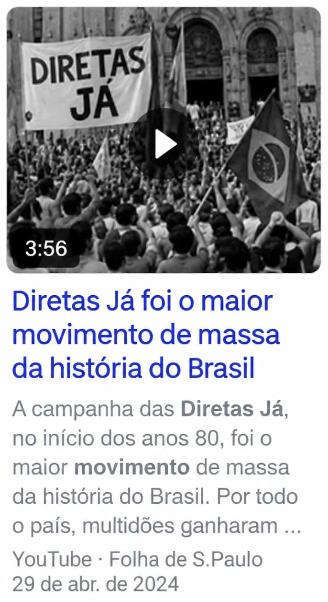

Quatro conceitos para entender a República brasileira
História · 2ª série · Ensino Médio · Texto de leitura
Quatro conceitos para entender a República brasileira
Cidadania, democracia, participação popular e resistência: da Proclamação, em 1889, às eleições de 2026
Colégio Estadual Rodolfo de Oliveira · CERO · 2026
Imagine que alguém lhe pedisse para explicar como o Brasil chegou ao que é hoje. Você poderia listar presidentes, constituições e datas, mas ficaria faltando um fio que ligasse tudo isso. Este texto propõe quatro palavras para cumprir esse papel: cidadania, democracia, participação popular e resistência.
Essas palavras aparecem nos jornais, nas redes sociais, nas provas e até nas conversas de família, e muitas vezes são usadas como se todos soubessem o que significam. Nas próximas páginas, você vai ver o sentido de cada uma e acompanhar como elas se manifestaram em momentos diferentes da República, da Primeira República (1889–1930) até a atualidade.
Cada conceito responde a uma pergunta. A cidadania pergunta: quem tem direitos? A democracia pergunta: quem decide e como? A participação popular pergunta: de que modo as pessoas influenciam as decisões? E a resistência pergunta: o que as pessoas fazem quando consideram a ordem injusta? Ao longo do texto, você vai perceber que as respostas mudaram bastante em 137 anos.
Cada capítulo começa com a explicação do conceito e continua com exemplos de épocas diferentes. Procure comparar um período com outro e perceber o que mudou e o que permaneceu.

Quando alguém diz “sou cidadão brasileiro”, quer dizer mais do que ter nascido no país ou possuir documentos. Cidadania é o conjunto de direitos e deveres que ligam as pessoas entre si, à sociedade e ao Estado.
O historiador José Murilo de Carvalho, autor de Cidadania no Brasil: o longo caminho, propõe separar esses direitos em três grupos. Os direitos civis garantem a liberdade e a igualdade perante a lei: ir e vir, expressar o que pensa, ter propriedade, ser julgado com justiça. Os direitos políticos permitem participar do poder: votar, ser votado, criar partidos e sindicatos. Os direitos sociais asseguram condições dignas de vida: educação, saúde, trabalho, salário justo e aposentadoria.
Quem reúne os três tipos de direitos é um cidadão pleno. Quem tem apenas alguns é um cidadão incompleto. Essa ideia é muito útil para estudar a história, porque, em quase todas as épocas, uma parte dos brasileiros foi cidadã apenas pela metade.
Cidadania: conjunto de direitos civis, políticos e sociais exercidos de fato pelas pessoas, com garantias legais.
Estadania: termo de Carvalho para a situação em que os direitos chegam como favor de quem governa e podem ser retirados quando o governante quiser.
Na Primeira República: direitos no papel
A Constituição de 1891 acabou com o voto censitário, aquele que dependia de renda. Parecia um grande avanço, mas só podiam votar homens alfabetizados com 21 anos ou mais. Mulheres, analfabetos, mendigos e soldados de baixa patente ficavam de fora. Como cerca de 65% da população com mais de 15 anos era analfabeta em 1900, a maioria dos adultos não conseguia nem se alistar. Em 1930, o ano de maior participação eleitoral da Primeira República, só 5,65% da população votou. A igualdade proclamada em lei convivia com a exclusão na prática.
Na Era Vargas: direitos sociais como presente
Depois de 1930, o país ampliou direitos. O Código Eleitoral de 1932 estabeleceu o voto secreto e o voto feminino, e em 1943 a Consolidação das Leis do Trabalho (CLT) reuniu salário mínimo, jornada de trabalho e férias. Mas esses direitos sociais avançaram junto com restrições políticas: durante o Estado Novo (1937–1945), o Congresso foi fechado e a liberdade de expressão foi controlada. Muitos trabalhadores passaram a ver as leis trabalhistas como um presente de Getúlio Vargas, e não como resultado das greves e lutas anteriores. É isso que Carvalho chama de estadania.
Da Constituição de 1988 à atualidade
A Constituição de 1988, chamada de Constituição Cidadã, reuniu os três tipos de direitos em um único texto, elaborado com participação da sociedade, que enviou cerca de 72 mil sugestões. Antes dela, em 1985, os analfabetos já tinham conquistado o direito de votar. Nas décadas seguintes surgiram leis como o Estatuto da Criança e do Adolescente (1990), a Lei Maria da Penha (2006), a Lei de Cotas (2012) e o Estatuto da Pessoa com Deficiência (2015).
Ainda assim, ter uma lei não significa que todos exerçam o direito. A Consolidação das Leis do Trabalho determina igual salário para funções iguais, mas dados do IBGE de 2024 indicam que as mulheres ganham cerca de 20% menos do que os homens nas mesmas funções. Em 2023, 1.463 mulheres foram vítimas de feminicídio, segundo o Fórum Brasileiro de Segurança Pública. E o debate sobre os direitos dos trabalhadores de aplicativos mostra que a cidadania social precisa ser repensada a cada mudança no mundo do trabalho.
Em Goiás: oligarquias e quilombolas
Na Primeira República, famílias como os Caiado e os Bulhões dominavam a política goiana, e a cidadania política dependia da fidelidade a um chefe local. Hoje, a comunidade Kalunga, em Goiás, vive na região há cerca de trezentos anos e conta com o artigo 68 da Constituição de 1988, que reconhece a propriedade das terras ocupadas por remanescentes de quilombos.

A palavra democracia vem do grego e junta demos (povo) e kratos (poder). Em uma democracia, o poder pertence ao povo, que o exerce diretamente ou por meio de representantes. A Constituição brasileira de 1988 diz isso logo no início: “Todo o poder emana do povo”.
Mas atenção: eleger não é o mesmo que viver em uma democracia. Para que uma eleição seja democrática, o voto precisa ser livre (secreto e sem pressão), amplo (aberto à maioria dos adultos) e competitivo (com candidatos e partidos de verdade e resultados respeitados). Também são necessárias a liberdade de imprensa e de associação, a separação entre os Poderes Executivo, Legislativo e Judiciário e o respeito aos direitos das minorias.
Democracia: regime em que o poder vem do povo, por eleições livres e competitivas, com liberdade de expressão e de organização e respeito às regras e aos direitos de todos. Eleições sem liberdade ou sem concorrência são só uma aparência de democracia.
Você já viveu uma experiência democrática em escala pequena: a eleição do representante de turma ou do grêmio estudantil. Ela só tem valor se o voto for secreto, se houver mais de um candidato e se todos aceitarem o resultado, inclusive quem perdeu.
Na Primeira República: eleições sem democracia
Entre 1894 e 1930, o Brasil realizou eleições presidenciais regulares. No entanto, o voto era aberto, o que permitia a patrões e coronéis vigiar os eleitores, o chamado voto de cabresto. Havia fraudes na contagem e a recusa de reconhecer candidatos de oposição eleitos, a “degola”. Os resultados falam por si: em 1906, o vencedor teve 97,9% dos votos válidos; em 1918, 99,1%. Disputas reais não produzem números assim.
Do Estado Novo à ditadura civil-militar
Em 1932, o Código Eleitoral criou a Justiça Eleitoral para combater a fraude. Mas, em 1937, Getúlio Vargas deu um golpe, usando como pretexto o Plano Cohen, um documento forjado sobre uma suposta conspiração comunista. O Congresso foi fechado e os partidos foram extintos. Depois da queda de Vargas, a Constituição de 1946 trouxe eleições competitivas e partidos nacionais, mas os analfabetos continuavam sem voto e as crises políticas eram constantes. Em 1964, um golpe civil-militar inaugurou uma ditadura de 21 anos. O Brasil ficou 29 anos sem eleição direta para presidente, de 1960 a 1989.
Da redemocratização à atualidade
A campanha das Diretas Já (1983–1984), a eleição indireta de Tancredo Neves (1985) e a Constituição de 1988 abriram o período democrático mais longo da história republicana: são mais de 41 anos. Nesse tempo, o país elegeu presidentes por voto direto, realizou plebiscitos, afastou um presidente por impeachment dentro das regras constitucionais (Collor, em 1992) e viu a oposição chegar ao poder (2002).
Isso não significa que a democracia esteja garantida para sempre. Em 8 de janeiro de 2023, a Praça dos Três Poderes foi invadida por manifestantes que não aceitavam o resultado da eleição. Em 11 de setembro de 2025, a 1ª Turma do Supremo Tribunal Federal condenou o ex-presidente Jair Bolsonaro a 27 anos e 3 meses de prisão por crimes ligados à trama golpista, por quatro votos a um. E em outubro de 2026 o país vive novas eleições gerais, com o primeiro turno realizado em 4 de outubro e o segundo marcado para 25 de outubro. A democracia se mantém quando vencedores e perdedores respeitam as regras.
Em Goiás: o fim das oligarquias
Depois da Revolução de 1930, Pedro Ludovico Teixeira foi nomeado interventor em Goiás e pôs fim ao domínio das oligarquias tradicionais. Em 1933, foi lançada a pedra fundamental de Goiânia, símbolo de modernização do Centro-Oeste. Repare que esse processo ocorreu em um governo provisório, em que interventores substituíam governadores eleitos.

Participar não é apenas votar de dois em dois anos. Participação popular é tudo o que as pessoas fazem para influenciar decisões que afetam a vida coletiva: votar, filiar-se a um partido, criar um sindicato, escrever na imprensa, assinar um abaixo-assinado, fazer greve, ocupar uma praça, pressionar um parlamentar.
Podemos reunir essas formas em dois caminhos. A participação institucional acontece pelos canais previstos em lei: o voto, o plebiscito (consulta antes de uma decisão), o referendo (consulta para confirmar uma decisão), a iniciativa popular de projetos de lei e os conselhos de políticas públicas. A participação direta acontece pela mobilização coletiva: greves, passeatas, comícios, ocupações e campanhas na imprensa e nas redes sociais. Muitas vezes, ela nasce justamente quando os canais legais estão fechados.
Participação popular: conjunto de ações pelas quais as pessoas influenciam decisões coletivas. Inclui o voto, mas também a organização em sindicatos, associações e movimentos sociais, a imprensa, a greve e as manifestações.
Quando não há canais: o povo “bestializado”
“O povo assistiu àquilo bestializado, atônito, surpreso, sem conhecer o que significava.”
A frase mostra que, em 1889, a mudança de regime foi feita sem consultar o povo. Como o voto era restrito e controlado, a participação foi para as ruas e para as fábricas. Em 1904, a população do Rio de Janeiro protestou na Revolta da Vacina contra a vacinação obrigatória e contra reformas que expulsavam os pobres do centro. Em 1917, cerca de 70 mil trabalhadores pararam São Paulo na Greve Geral e conquistaram, nos anos seguintes, as primeiras leis de proteção ao trabalho.
Os grandes movimentos do século XX
Entre 1947 e 1953, a campanha “O petróleo é nosso” reuniu estudantes, militares e sindicatos e contribuiu para a criação da Petrobras. Nos anos 1950, as Ligas Camponesas reuniram trabalhadores do campo que lutavam contra a expulsão das terras. Mesmo sob a ditadura, as ruas voltaram a se encher: em 1968, a Passeata dos Cem Mil, no Rio de Janeiro, protestou contra a violência da repressão; em 1978, os metalúrgicos do ABC paulista desafiaram a lei e pararam as fábricas. Em 1984, as Diretas Já levaram até 1,5 milhão de pessoas aos comícios para exigir o voto direto para presidente.
Quando a ditadura acabou, a participação passou a fazer parte do desenho institucional. A Constituinte recebeu cerca de 72 mil sugestões da população e a Constituição de 1988 previu plebiscito, referendo, iniciativa popular e conselhos. Em 1992, os “caras-pintadas”, jovens com o rosto pintado de verde e amarelo, ocuparam as ruas pelo impeachment de Collor.
Na atualidade: das ruas às redes
Em 2013, o Movimento Passe Livre protestou contra o aumento das passagens de ônibus em São Paulo e as Jornadas de Junho se espalharam por todo o país. Em 2015, estudantes secundaristas ocuparam escolas em São Paulo. Em 2023, após os ataques de 8 de janeiro, movimentos sociais e cidadãos foram às ruas em defesa das instituições. As redes sociais ampliaram a capacidade de mobilização, mas também facilitaram a circulação de informações falsas. Participar de modo consciente exige checar os fatos e conhecer as regras do jogo.
Em Goiás: Trombas e Formoso
Entre 1950 e 1957, posseiros do norte de Goiás, na região de Trombas e Formoso, organizaram conselhos próprios e resistiram à grilagem de terras. O episódio mostra como a participação popular nasceu, no interior do Brasil, da luta por terra e por autonomia.

Resistência é a reação organizada ou espontânea contra uma ordem considerada injusta. Ela pode ser armada ou pacífica, coletiva ou individual, aberta ou discreta. Na história da República, aparece nos sertões, nas fábricas, nos quartéis, nas escolas e nas artes.
Podemos distinguir quatro formas principais. A resistência armada usa a força, como nas revoltas e guerrilhas. A resistência civil recorre a greves, passeatas e desobediência a leis injustas. A resistência cultural denuncia a opressão por meio da música, do teatro, do cinema e da literatura. E a resistência cotidiana consiste em manter modos de vida, línguas e tradições ameaçados, como fazem comunidades quilombolas, indígenas e camponesas.
Resistência: reação organizada ou espontânea contra uma ordem considerada injusta. Pode visar a um governo, a uma lei ou a uma situação de opressão.
Na Primeira República: revoltas contra a violência do Estado
Entre 1896 e 1897, milhares de sertanejos se reuniram em Canudos, na Bahia, em torno de Antônio Conselheiro. A comunidade enfrentou quatro expedições militares e foi destruída em 1897. Em 1910, marinheiros, em sua maioria negros, tomaram navios na Baía de Guanabara na Revolta da Chibata, exigindo o fim dos castigos físicos herdados da escravidão. Entre 1912 e 1916, camponeses do Contestado, em Santa Catarina e no Paraná, resistiram à perda de terras e ao avanço da ferrovia. Nem todas essas resistências venceram, mas todas revelaram que havia uma insatisfação que o sistema político não conseguia ouvir.
Na ditadura civil-militar: resistir de muitos modos
Depois de 1964 e, sobretudo, do AI-5 (1968), a resistência assumiu várias formas. Houve a luta armada de pequenos grupos de esquerda e a Guerrilha do Araguaia (1972–1974), na divisa entre Pará, Goiás (atual Tocantins) e Maranhão. Houve o movimento estudantil, que organizou a Passeata dos Cem Mil. Houve a resistência cultural, com a Tropicália, o Cinema Novo e o teatro, mesmo sob censura. Houve a ação de setores da Igreja e da imprensa, que ganhou força depois do assassinato do jornalista Vladimir Herzog, em 1975. E houve a campanha pela Anistia, que resultou na lei de 1979.
Da Constituição de 1988 à atualidade
Com a democracia, a resistência passou a se expressar principalmente por meios legais, mas não desapareceu. O líder seringueiro Chico Mendes, assassinado em 1988, tornou-se símbolo da defesa da floresta. Em 1996, o massacre de 21 sem-terra em Eldorado do Carajás reforçou a luta pela reforma agrária. Em 2018, o assassinato da vereadora Marielle Franco transformou seu nome em símbolo da resistência de mulheres negras e de moradores de favelas. Em 2023, o Congresso aprovou a lei do marco temporal, que só reconheceria as terras indígenas ocupadas em 5 de outubro de 1988, e os povos indígenas, apoiados por entidades, a contestaram; em 2024, o STF criou uma comissão de conciliação sobre o tema.
Nem todo ato contra o governo é resistência democrática. Nos ataques de 8 de janeiro de 2023, manifestantes invadiram e depredaram as sedes dos Três Poderes, e a resposta de cidadãos, entidades e instituições foi defender a Constituição. Um bom critério é perguntar: o movimento defende direitos e regras que protegem todos ou procura impor a vontade de um grupo pela força?
Em Goiás: Santa Dica, Coluna Prestes e Araguaia
Na década de 1920, a líder religiosa Santa Dica reuniu fiéis na região de Pirenópolis e foi reprimida pelas forças do estado. Entre 1925 e 1926, a Coluna Prestes atravessou o interior goiano, passando por cidades como Jataí, Niquelândia e Posse. E a Guerrilha do Araguaia, nos anos 1970, atuou em uma região que hoje pertence ao Tocantins, mas que então fazia parte de Goiás.
Para integrar
Os quatro conceitos em ação: o caso das Diretas Já
Um episódio em que cidadania, democracia, participação e resistência aparecem juntas.
Os quatro conceitos não funcionam como gavetas separadas. Eles se cruzam em quase todos os grandes acontecimentos da República. Um bom exemplo é a campanha das Diretas Já, entre 1983 e 1984.
Direito político negado
Os brasileiros não podiam escolher o presidente pelo voto direto desde a ditadura: faltava um direito político básico.
Eleição direta para presidente
A campanha exigia que o poder voltasse a vir do povo, por meio de eleições livres e competitivas.
Comícios gigantes
Em 16 de abril de 1984, cerca de 1,5 milhão de pessoas se reuniram em um comício em São Paulo.
Contra o regime militar
Partidos de oposição, sindicatos, artistas e até jogadores de futebol, como Sócrates, se uniram contra a ditadura.

A Emenda Dante de Oliveira, que restabeleceria as eleições diretas, foi derrotada na Câmara dos Deputados em 25 de abril de 1984, por falta de quórum. Mesmo assim, a mobilização enfraqueceu o regime. Em 1985, a ditadura terminou com a eleição indireta do civil Tancredo Neves, e em 1988 a Constituição Cidadã reuniu, em um mesmo texto, direitos civis, políticos e sociais, eleições diretas e mecanismos de participação popular.
A história republicana mostra uma tensão constante entre o poder concentrado e a pressão popular por direitos. Quando os canais oficiais se fecham, a participação vai às ruas e a resistência ganha força. Quando eles se abrem, a cidadania se amplia e a democracia se fortalece. Hoje, quase quarenta anos depois da Constituição, o desafio é transformar os direitos escritos em direitos vividos e manter vivas as instituições que protegem a todos.
Resumo em quatro ideias
- Cidadania: conjunto de direitos civis, políticos e sociais. Quem tem os três é cidadão pleno.
- Democracia: poder que vem do povo por eleições livres, amplas e competitivas, com liberdades e regras respeitadas.
- Participação popular: tudo o que as pessoas fazem para influenciar decisões: votar, mas também se organizar, fazer greve e ocupar as ruas.
- Resistência: reação a uma ordem considerada injusta, que pode ser armada, civil, cultural ou cotidiana.
Referências
Bibliografia e fontes
De onde vêm os fatos, as datas e os dados deste texto.
- AZEVEDO, Gislane; SERIACOPI, Reinaldo. Por toda parte: História. São Paulo: FTD, 2024.
- CAMPOS, Cristiano; FERREIRA, Lier Pires; SILVA, Renata (coord.). História: democracia e protagonismo (Interação). São Paulo: Editora do Brasil, 2024.
- SM EDUCAÇÃO (org.). Ser protagonista: Ciências Humanas e Sociais Aplicadas — História. 1. ed. São Paulo: Edições SM, 2024.
- VIEIRA, Felipe de Paula Góis; BACKX, Isabela; FERNANDES, Luiz Estevam de Oliveira; ABREU, Marcelo. Moderna Plus: História. São Paulo: Moderna, 2024.
- Caminhos do Homem: História, v. 1, 2 e 3. PNLD 2018.
- CARVALHO, José Murilo de. Cidadania no Brasil: o longo caminho. Rio de Janeiro: Civilização Brasileira, 2001.
- CARVALHO, José Murilo de. Os bestializados: o Rio de Janeiro e a República que não foi. São Paulo: Companhia das Letras, 1987.
- BRASIL. Constituição da República Federativa do Brasil, 1988 (arts. 1º, 68 e 231).
- Supremo Tribunal Federal, 1ª Turma: julgamento da trama golpista, 11 set. 2025. Eleições gerais de 2026: 1º turno em 4 out. e 2º turno em 25 out. (cobertura jornalística).
Colégio Estadual Rodolfo de Oliveira · CERO · 2026